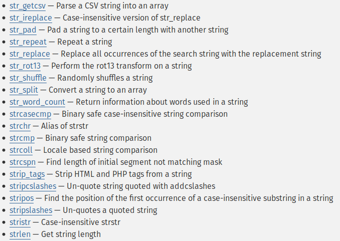
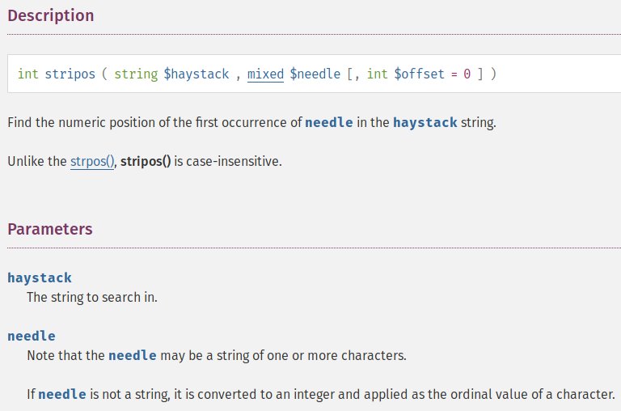
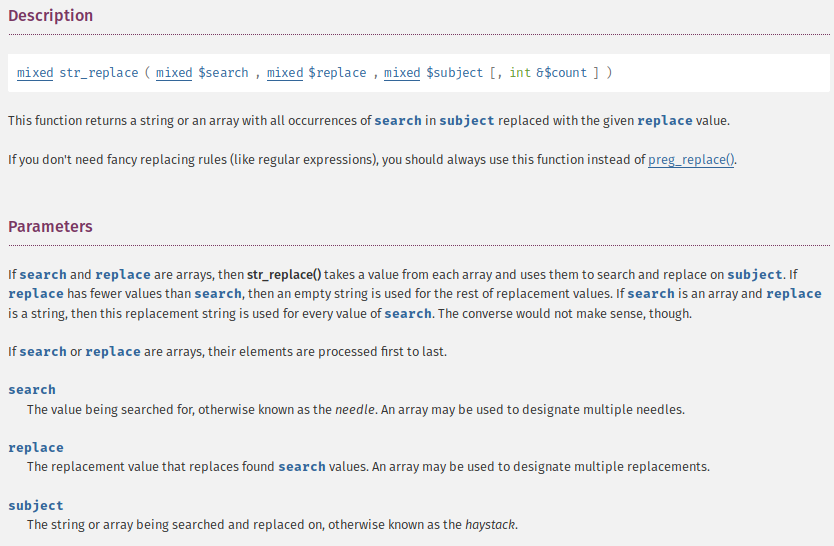
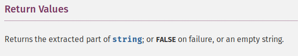
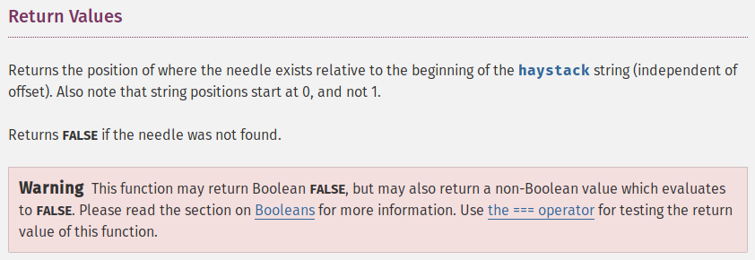
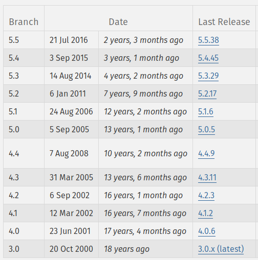
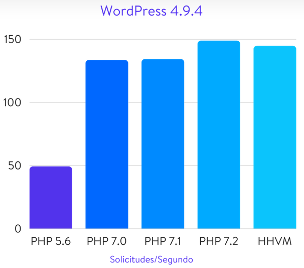
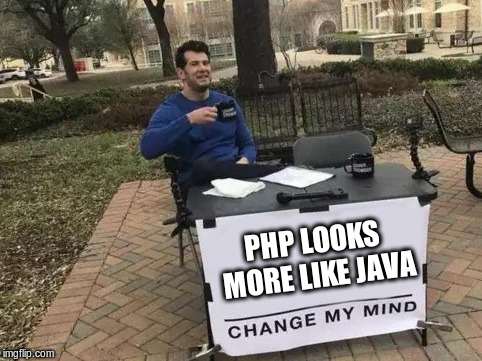
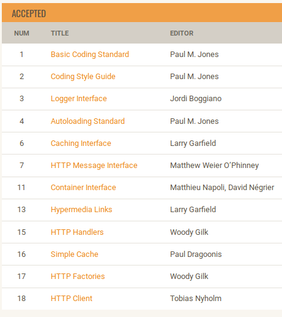

PHP en el 2019
¿en que año vives?
Presentación
https://github.com/danielspk/PHP2019Workshop
php -S 0.0.0.0:3000WTF!
¿Quién soy?
Daniel M. Spiridione
Website - Open Source - Twitter - Linkedin
Temario:
.... lo intente pero serían al menos 8 slides!!!
Un poco del pasado ...
PHP
Un poco de Historia ... rápida
- Fue creado en 1995 (hace más de 20 años) por Rasmus Lerdorf
- Fue diseñado originalmente para servir aplicaciones web
- Es open source
- La compañia Zend (hoy Rogue Wave) está a cargo del motor de ejecución (Zend Engine)
PHP
El Lenguaje ... vista rápida
- Escrito en C (eso explica muchas cosas)
- Interpretado (como python, perl, ruby, node)
- Tipado dinámico (no maten al mensajero)
- Permite programar procedimentalmente como orientado a objetos
Usos de PHP
Es un lenguaje de scripting de proposito general
Usos de PHP
Principalmente se utiliza para la Web (SAPI) y Command Line (CLI)
Otros usos de PHP
La realidad es que estos proyectos nunca tuvieron exito.
PHP
Mala fama
- Tiene un fundamento real (a veces)
- Existe mucho desconocimiento
- Refiere a otras épocas - PHP 3/4/5
- Hay muchos extremistas / idealistas
PHP - Mala Fama
Ejemplos
No consistente

Funciones de Strings "str_" y "str", etc
No consistente

String base como primer parámetro
No consistente

String base como tercer parámetro
Retornos


Algunos retornos pueden compararse con "==" pero otros con "===" para tener seguridad
Conversiones:
var_dump(true + true); // int(2)Toda la presentación podría ser sobre las incongruencias o puntos grises de PHP.
Si bien la verdad es que no es un lenguaje que brilla con su diseño, tiene una mala fama muy mal infundadaes en muchos aspectos.
No olviden su origen - Lenguaje C
Lectura para la casa:
Para quien es esta charla
Esta charla es para vos si:
seguis usando cualquier rama de la versión 4.x
Esta charla es para vos si:
seguis usando cualquier rama de la versión 5.x
Esta charla es para vos si:
comenzas un nuevo proyecto sin usar la última versión de PHP
SI, DIJE LA ÚLTIMA!!!
Esta charla es para vos si:
si pones esta cara cuando ves algo como:
declare(strict_types = 1);
Esta charla es para vos si:
trabajas de otra cosa pero en el trabajo te dejaron venir igual.
bien ahi!
Un poco del futuro (actual) ...
Versiones de PHP
La versión actual es la 5.2
Mentira!!!
Esa versión es de hace 7 años
Versiones de PHP

(al 30/10/2018)
PHP 7.3 se publicaría el 06/12/2018
¿PHP 6?
¿cómo explicar lo que es una bomba de humo?
Ya fue!, pongo un gif de Caruso
¿Porque actualizar?

PHP en el 2019
Nota: Muchas de las características que veremos son de la rama 5.x pero por esas razones de la "vida" son desconocidas o no utilizadas.
Por donde comenzar
(a actualizarnos)
A - Métodos mágicos
class Demo
{
public function __toString() {
return "Soy una clase";
}
}
$clase = new Demo();
echo $clase; // Soy una claseclass Demo
{
public function __invoke($param) {
echo "Me han invocado con este parámetro: ".$param;
}
}
$clase = new Demo();
$clase(25); // Me han invocado con este parámetro: 25class Demo
{
private $propiedad = 5;
public function __debugInfo() {
return [
'propiedad' => $this->propiedad * 5
];
}
}
$clase = new Demo();
var_dump($clase);
// object(Demo)#1 (1) { ["propiedad"] => int(25) }B - Closures - Funciones anónimas
$sumador = function($n1, $n2) {
return $n1 + $n2;
};
echo $sumador(10, 20); // 30C - Clase Closure
class Demo {
private $propiedad = 5;
}
$funcionAnonima = function() {
return $this->propiedad;
};
$closure = Closure::bind($funcionAnonima, new Demo, 'Demo');
echo $closure(); // 5class Demo
{
public function saludar() {
echo "Hola closure";
}
}
$closure = Closure::fromCallable([new Demo(), 'saludar']);
echo $closure(); // Hola closureD - Namespaces
namespace App\Controler;
use \Exception;
use App\Model\Usuario;
class Demo
{
public function ejemplo() {
$usr1 = new App\Model\Usuario(1);
$usr2 = new Usuario(2);
}
}E - Traits
trait DemoTrait
{
public function saludar() {
echo "Hola desde Trait";
}
}
class Demo
{
use DemoTrait;
}
$demo = new Demo();
$demo->saludar(); // Hola desde Trait
F - Sintaxis acortada de arrays
$array1 = array(1, 2, 3);
$array2 = [1, 2, 3];
echo $array1[0]; // 1
echo $array2[0]; // 1G - Generators
function recorrerUnMillon() {
for ($i = 0; $i < 1000000; $i++) {
yield $i;
}
}
foreach (recorrerUnMillon() as $numero) {
if ($numero == 10) {
break;
}
echo $numero;
}
// 0123456789H - Finally en try-catch
try {
// ...
} catch (Exception $e) {
// ...
} finally {
echo "Siempre me voy a ejecutar!";
}I - Error y Throwable
try {
// ...
} catch (DivisionByZeroError $e) {
// DivisionByZeroError extiende de ArithmeticError
// que extiende de Error
}
try {
// ...
} catch (Throwable $e) {
// Exception y Error implemetan la interface Throwable
}J - Funciones variadicas
function sumar(...$numeros) {
$suma = 0;
foreach ($numeros as $numero) {
$suma += $numero;
}
return $suma;
}
echo sumar(1, 2); // 3
echo sumar(1, 2, 3, 4); // 10K - Tipos escalares
Parámetros:
function sumar(int $n1, int $n2) {
return $n1 + $n2;
}
function concatenar(string $a, string $b) {
return $a.$b;
}
echo sumar(5, 5); // 10
echo sumar("5", "5"); // posible ERROR!
echo concatenar("A", "B"); // AB
echo concatenar(65, 66); // posible ERROR!Parámetros:
function hacerAlgo(ModeloUsuario $model) {
// ...
}
hacerAlgo(new ModeloUsuario()); // OK!
hacerAlgo(25); // ERROR!Retornos:
function suma($n1, $n2): int {
return (int) ($n1 + $n2);
}
function crearUsuario(): UsuarioModel {
return new UsuarioModel();
}Parámetros / Retornos nullables:
function transformar(?string $parametro): ?string {
if (is_null($parametro)) {
return null;
}
return strtoupper($parametro);
}
echo transformar(null); // null
echo transformar("a"); // "A"Retorno void:
function guardar(): void {
// hacer algo...
// no hay ningún return
}Eso no es todo, en PHP 7.4 se permitiran tipos en propiedades de clases.

L - Operador null coalescing
// esto
$valor = isset($lista['valor']) ? $lista['valor'] : "desconocido";
echo $valor;
// es igual a esto
$valor = $lista['valor'] ?? "desconocido";
echo $valor;M - Operador spaceship
echo 1 <=> 1; // 0
echo 1 <=> 2; // -1
echo 2 <=> 1; // 1
echo 'a' <=> 'a'; // 0
echo 'a' <=> 'b'; // -1
echo 'b' <=> 'a'; // 1N - Clases anónimas
$demo = new class {
public function saludar(): string {
echo "Hola!";
}
};
echo $demo->saludar(); // Hola!Ñ - Visibilidad en constantes
class Demo
{
public const NUMERO = "A2578-8";
private const SERIE = "125478-8965Z";
}
echo Demo::NUMERO; // A2578-8
echo Demo::SERIE; // ERROR!O - Multiple catch
try {
// hacer algo ...
} catch (ExcepcionA $e) {
// solucionar algo ...
} catch (ExcepcionB $e) {
// solucionar lo mismo ...
}
// se puede resumir en
try {
// hacer algo ...
} catch (ExcepcionA | ExcepcionB $e) {
// solucionar algo ...
}P - Modo estricto
function sumar(int $num1, int $num2): int {
return $num1 + $num2;
}
echo sumar(25, 25); // 50
echo sumar(25.5, 25.5); // 50 (parámetros convertidos a int)declare(strict_types=1);
function sumar(int $num1, int $num2): int {
return $num1 + $num2;
}
echo sumar(25, 25); // 50
echo sumar(25.5, 25.5); // ERROR!Q - Argon2
$hash = password_hash('supercontraseña', PASSWORD_ARGON2I);
echo $hash; // $argon2i$v=19$m=1024,t=2,p=2$SUpMRXJwMDJUZzY3dnVIRg$CQzzdiKhOHQ7Nsa9GslcNGY/CEHGRNx7NnZJPSz2mPwR - SPL
Permite trabajar e implementa:
- Estructuras de datos
- Iteradores
- Interfaces
- Excepciones
- Archivos
$pila = new SplStack();
$pila->push(25);
$pila->push(20);
$pila->rewind();
while($pila->valid()) {
echo $pila->current().', ';
$pila->next();
} // 20, 25,$cola = new SplQueue();
$cola->enqueue(25);
$cola->enqueue(20);
$cola->rewind();
while($cola->valid()) {
echo $cola->current().', ';
$cola->next();
} // 25, 20,$info = new SplFileInfo('/tmp/logs/archivo.log');
echo $info->getPath(); // /tmp/logs
echo $info->getType(); // file
echo $info->getExtension(); // logBonus
S - Estándares PSR
Definen interfaces y recomendaciones para la comunidad de PHP

Respetar e implementar estos estándares permite y facilita la interoperabilidad de componentes
¿Qué es un componente o paquete?
T - Paquetes
En una galaxia muy muy lejana ....
Actualmente:
U - Testing
Buenas alternativas:
V - Ides
Mi recomendación:
+ Xdebug
W - Frameworks
Hay muchos y muy buenos:
- Symfony
- Laravel
- Zend Framework / Expressive
- Cake PHP
- ... muchos, pero muchos más!
¿Cuál uso yo?
Ninguno! - uso paquetes
X - Arquitecturas
Mi listado:
(de aquellas que deberías al menos saber que existen)
- SOAP
- RPC
- REST
- GraphQL
- gRPC
Y - 3 Consejos personales
- Nginx + FPM
- habilitar opcache
- usar colas de trabajos para tareas de larga duración
Z - PHP Asincrónico?
Si!, Es posible:
Ups! - no hay más letras en el albecedario
(Gracias a UNICODE sigamos con el alfabeto Chino)
阿 - Extensiones de PHP
Repositorio oficial:
¿Extensiones propias?
Si!, Es posible:
贝 - PSR15
¿No lo vimos antes?
Si, pero los middlewares merecen una segunda oportunidad
色 - Certificaciones
Esta es la única realmente seria y apreciada en la comunidad de PHP
(no confundir con certificaciones de frameworks)
Atentos al Futuro
En octubre de 2018 parte del equipo del core del Zend Engine y Zend Framework anunciaron que dejan la Compañia Rogue Wave (quien compro Zend en 2015).
Mantente al día informado
ESO ES TODO AMIGOS
¿Preguntas?